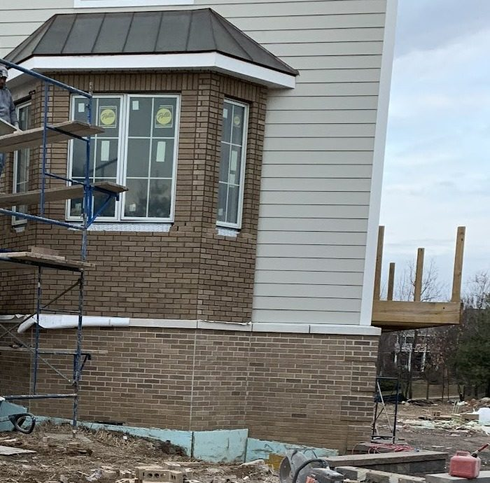

Course 1
Brickwork & brick veneer
Brick laid on the face of a house, a bay window, a base wall or a set of steps. You need it on a new build, an addition, or where old brick has to be matched and rebuilt.
- Brick veneer walls and bays
- Brick base courses and steps
- Repointing worn joints